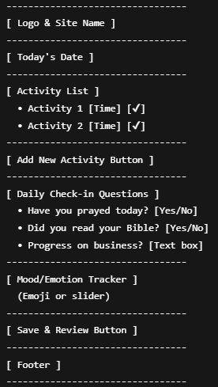
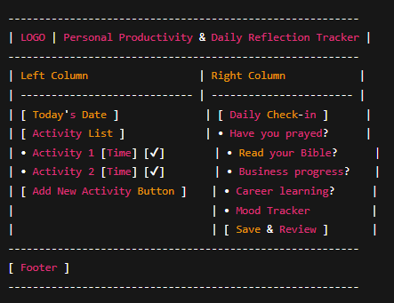

Personal Productivity & Daily Reflection Tracker
Reason for Name: This name clearly communicates the site’s goal: to help users track daily
tasks, set reminders, and reflect on their progress.
Site Purpose
The site will help users plan and manage daily activities by providing:
- Task scheduling with multiple reminders (15, 10, 5 minutes, and exact start time)
- Completion tracking and optional reflection reports
- Daily spiritual and productivity check-in prompts
- Emotion and mood tracking
The goal is to improve consistency, accountability, and personal growth.
Scenarios
- How can I view my tasks for today along with their scheduled times?
- Can I mark a task as done and add my notes later?
Color Scheme
- #2980B9 – Used for headings and accent buttons.
- #2C3E50 – Used for body text and primary navigation.
Typography
- Poppins – Used for headings and titles.
- Roboto – Used for body text.
Wireframes
Mobile View:

Desktop View:
